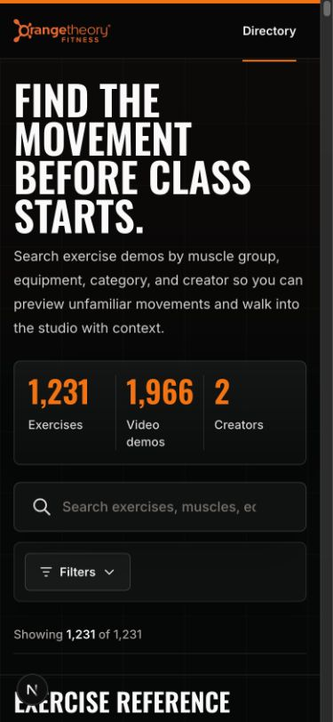
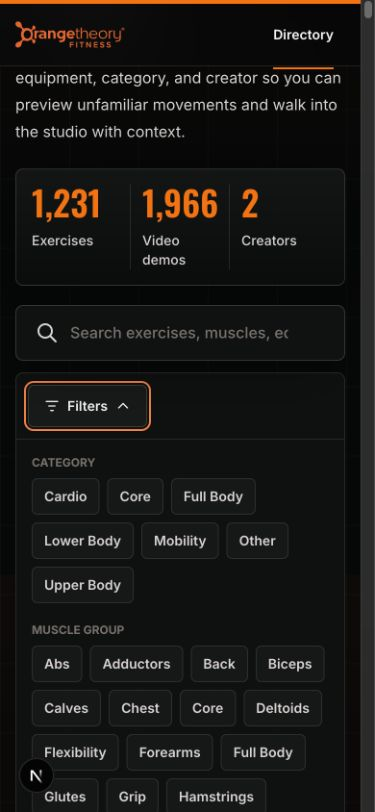
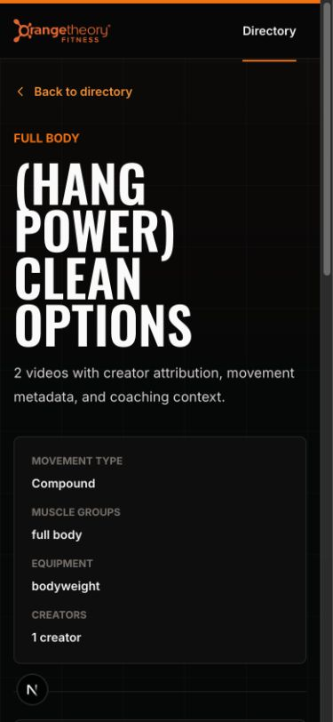
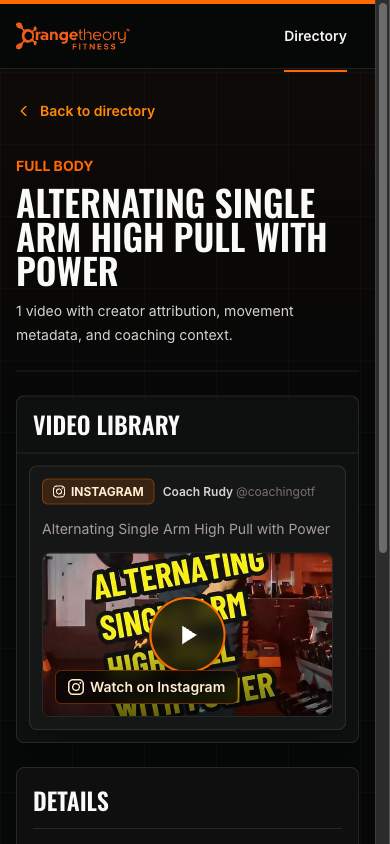

Design QA — 2026-08-14 creator refresh
Final result: PASSED
Scope
This refresh preserves the existing visual design and interaction model while adding the latest reviewed creator videos. QA focused on catalog completeness, new-video presentation, local thumbnail coverage, responsive behavior, filter interactions, detail routes, and video activation.
Mobile comparisons
The historical 375 × 812 baseline captures remain included for design context. The current implementation evidence uses a 390 × 844 CSS viewport; the browser suite also covers a 320px overflow viewport.
| State | Historical baseline | Current implementation |
|---|---|---|
| Directory |  |
 |
| Filters open |  |
 |
| Exercise detail |  |
 |
Additional evidence
{kind=link}
{kind=link}
Refresh findings
- All 43 discovered posts were reviewed: 41 exercise videos were accepted and 2 non-exercise posts were rejected.
- The catalog increased from 1,286 to 1,309 exercise groups and from 2,031 to 2,072 videos. New posts were assigned to existing groups where the movement matched and retained as distinct exercises where appropriate.
- All 41 new thumbnails were recovered locally. The complete catalog has 2,071 exact local thumbnails and one pre-existing explicit local fallback, with no remote or empty thumbnail references.
- A full HTTP crawl returned valid content for all 1,310 sitemap URLs and all 2,072 unique thumbnail URLs.
- The refreshed directory counts, filters, result cards, and new exercise detail page render correctly at desktop and mobile sizes. No horizontal overflow was found at 390px or 320px.
- TikTok activation inserts the responsive player and retains the original-post link. The live third-party iframe emitted TikTok-owned policy and media warnings in the test browser; first-party app behavior and the isolated embed integration checks passed.
Automated verification
- Catalog, data, thumbnail, documentation, type, and lint checks: passed
- Next.js production build with the documented Webpack fallback: passed
- Static output generated: 1,314 pages, including all 1,309 exercise routes
- Chromium desktop 1280 × 900: passed
- Chromium mobile 390 × 844: passed
- Chromium mobile 320 × 844: passed
- WebKit mobile 390 × 844: passed
- Catalog routes in sitemap: 1,309 of 1,309
- First-party browser console, page, request, and HTTP failure checks: passed
The managed test environment prevents the default Turbopack CSS worker from
binding its local port. The supported next build --webpack production path
completed successfully, so this is recorded as an environment limitation rather
than an application failure.